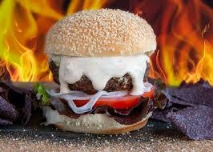

Tex-Mex Burger with Cajun Mayo

Description
Looking for a burger that goes beyond the basics? You’ve come to the right place. Here, it’s all about bold flavors, spicy twists, and mouthwatering creations that turn an ordinary meal into something unforgettable.
We’re kicking things off with our Tex-Mex Cajun Mayo Burger — a fiery fusion of Cajun heat and Tex-Mex flair. It’s stacked with juicy sirloin, creamy Cajun mayo, jalapeños, and pepper Jack cheese for a burger that’s bursting with flavor.
Prep & Cook Time:
- Prep Time: 25mins
- Cook Time:15mins
- Total Time: 40mins
- Servings: 4
👇 Start your flavor journey with our Spicy Cajun Burger recipe below!
Ingredients
- ½ cup mayonnaise
- 1 ⅓ pounds ground beef sirloin
- 4 teaspoons Cajun seasoning, divided
- ½ cup diced white onion
- 1 clove garlic, minced
- 1 jalapeño pepper, seeded and chopped
- 1 teaspoon Worcestershire sauce
- 1 clove garlic, minced
- 4 slices pepper Jack cheese
- 1 teaspoon Worcestershire sauce
- 4 slices pepper Jack cheese
- 4 hamburger buns, split
- 4 slices tomato
- 4 leaves lettuce
Tex-Mex Cajun Mayo Burger-Step-by-Step Instructions see below:
- Make the Cajun Mayo
In a small bowl, mix:
½ cup mayonnaise
1 teaspoon Cajun seasoning
Stir well and set aside in the fridge while you prep the burgers.
- Prepare the Burger Mix
In a large bowl, combine:
1 ⅓ pounds ground beef sirloin
½ cup diced white onion
1 jalapeño pepper, seeded and chopped
1 clove garlic, minced
**1 teaspoon Worcestershire sauce
2 teaspoons Cajun seasoning
Mix gently with your hands or a spoon until just combined. Don't overmix, or the patties may get tough.
- Form the Patties
Divide the beef mixture into 4 equal portions
Shape them into round, flat burger patties
- Cook the Burgers
Heat a grill or skillet over medium-high heat
Cook each patty for about 4–5 minutes per side, or until cooked through
In the last minute of cooking, top each patty with 1 slice of pepper Jack cheese and let it me
- Toast the Buns
While the patties cook, lightly toast the 4 hamburger buns on the grill or in a pan
- Assemble the Burgers
On each bun, layer in this order:
Bottom bun
A generous spread of Cajun mayo
Lettuce leaf
Tomato slice
Cheesy burger patty
Optional: another swipe of mayo on the top bun
Top bun
Thats a Wrap!
And there you have it — your very own Tex-Mex Cajun Mayo Burger bursting with bold spices, juicy layers, and creamy kick! This burger brings together the best of Cajun heat and Tex-Mex flair in one seriously satisfying bite. Whether you're serving it at a weekend BBQ, a family dinner, or just treating yourself, it’s guaranteed to impress.
Don’t forget to toast those buns, pile on the toppings, and slather on that Cajun mayo — it’s what takes this burger from good to unforgettable.
🔥 Crave it. Make it. Share it.
Tag us with your creations and stay spicy!
Back to Home